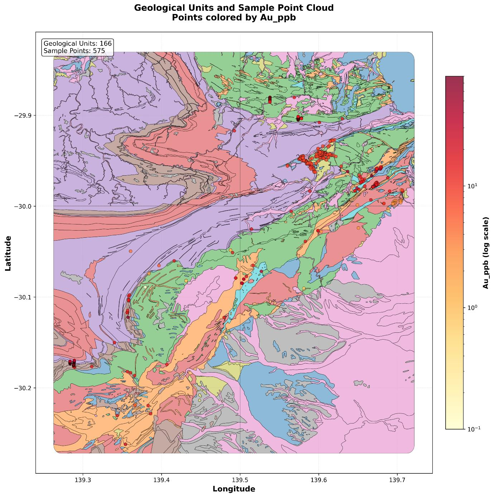

Capítulo 1 · 1.333 registros · 79 variables · 62.000 km²
El encargo y el terreno
Oro en un terreno proterozoico. Qué se pide, qué hay en el archivo, y por qué la estructura del análisis es modular.
Un archivo de 1.333 registros con la geoquímica de 79 variables, elementos y óxidos, del oro al SiO2, cada uno con su longitud y su latitud. Eso es todo lo que hay al empezar. La pregunta que este proyecto le hace a ese archivo: ¿dónde está el oro, y cuánto podemos fiarnos del mapa que dibujemos?
Este capítulo presenta el terreno, el archivo y la arquitectura del análisis. Los siguientes lo ensucian todo con la realidad: datos censurados, duplicados, una distribución que no es normal, y al final un mapa de kriging que confiesa su propia incertidumbre.
El terreno
Los datos vienen de un terreno proterozoico del este de South Australia, proterozoico quiere decir rocas de entre 2.500 y 541 millones de años, viejas incluso para un geólogo. La zona cubre unos 62.000 km², más o menos como Lituania, y es célebre por su variedad metalogénica: cobre, uranio, torio. Este análisis se concentra en una sola pregunta, la del oro (Au).

El mapa de arriba merece un minuto. Los colores de fondo son unidades geológicas, 166 distintas, y los puntos son muestras, coloreadas por su contenido de oro en ppb: partes por billón, gramos de oro por cada mil toneladas de roca. Dos cosas saltan a la vista sin saber nada de geoestadística: los puntos rojos (más oro) no caen en cualquier parte, y el muestreo se concentra en franjas, no en una malla regular. Las dos observaciones van a perseguirnos todo el proyecto.
La arquitectura: modular a propósito
El análisis se construyó con una estructura secuencial modular: limpieza, exploración, variografía y kriging son piezas separadas que se encadenan. No es cosmética. Significa que el elemento objetivo se puede cambiar, de Au a Pr o Nd, por ejemplo, sin reescribir el análisis, y que cuando algo falla, falla en una pieza con nombre y no en un guion monolítico de mil líneas.
- Limpiar primero: coordenadas inconsistentes, datos censurados, duplicados espaciales.
- Explorar después: qué distribución tiene el oro y con quién se junta.
- Modelar al final: la continuidad espacial (variograma) y la estimación (kriging).
Lo que queda establecido
Un archivo de 1.333 registros y 79 variables sobre 62.000 km² de rocas proterozoicas, una pregunta (¿dónde está el oro?) y una arquitectura por piezas para responderla. El siguiente capítulo abre el archivo y descubre que, antes de mapear nada, hay que decidir qué hacer con lo que falta, porque en algunas variables falta más del 99 %.